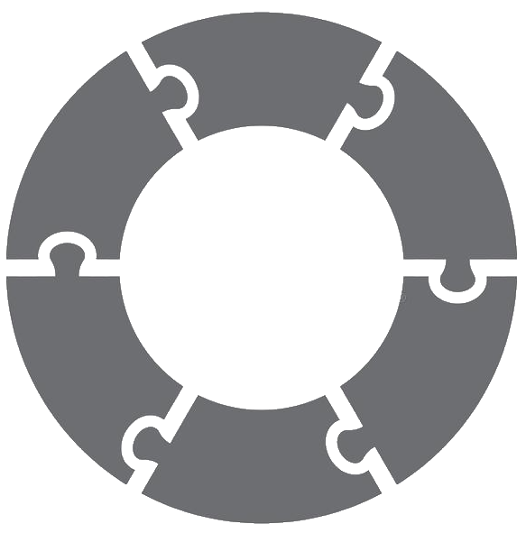

Define
JSON, YAML
Define you orchestration logic that is triggered via events and invokes services sync or async. Write logic that includes human decisions, set timeouts and retries, handle errors, and much more...
Standards-based DSL and open-source dev tools and runtimes are at the heart of the Serverless Workflow project. We connect developers around the world to foster innovation and provide a community-driven workflow ecosystem.
Get started:
Specification
Web
Editor
Java
Go
TypeScript
.NET
using the most powerful open-source, vendor-neutral workflow DSL. Our DSL provides integrations with widely used standards for events and services such as CloudEvents, OpenAPI, AsyncAPI, GraphQL, gRPC, and more.
JSON, YAML
Define you orchestration logic that is triggered via events and invokes services sync or async. Write logic that includes human decisions, set timeouts and retries, handle errors, and much more...
Java, Go, TypeScript, .NET, ...
Start developing your workflow orchestrations with help of our project SDKs. Get help creating out-of-box user experience using our open-source editor/web tooling and visualization support
Serverless, Cloud-Native, Distributed runtimes
Execute and scale your workflow-based orchestrations to build high-end applications.

id: monitorPatientVitalsWorkflow
version: '1.0'
name: Monitor Patient Vitals Workflow
states:
- name: Monitor Vitals
type: event
onEvents:
- eventRefs:
- High Body Temp Event
- High Blood Pressure Event
actions:
- functionRef: Invoke Dispatch Nurse Function
- eventRefs:
- High Respiration Rate Event
actions:
- functionRef: Invoke Dispatch Pulmonologist Function
end: true
functions: file://my/services/asyncapipatientservicedefs.json
events: file://my/events/patientcloudeventsdefs.yml
id: customerEmailWorkflow
version: '1.0'
name: Send Customer Email Workflow
states:
- name: Send Email
type: operation
actions:
- functionRef:
invoke: async
refName: Invoke Send Email Function
arguments:
customer: "${ .customer }"
end: true
functions:
- name: Invoke Send Email Function
operation: openapiservicedef.json#sendEmail
type: rest
id: provisionOrderWorkflow
version: '1.0'
name: Provision Order Workflow
states:
- name: Provision Order
type: operation
actions:
- functionRef:
refName: Invoke Provision Order Function
arguments:
order: "${ .order }"
transition: Fulfill Order
onErrors:
- errorRef: Missing Order ID Error
transition: Missing ID State
- errorRef: Missing Order Item Error
transition: Missing Item State
- errorRef: Insufficient Order Quantity Error
transition: Insufficient Quantity State
functions:
- name: Invoke Provision Order Function
operation: https://myservices.io/orders/graphql#provisionOrder
type: graphql
errors: file://mydefs/errordefs.json
id: newItemPurchaseWorkflow
version: '1.0'
name: New Item Purchase Workflow
states:
- name: Item Purchase
type: event
onEvents:
- eventRefs:
- New Purchase Event
actions:
- functionRef:
refName: Invoke Debit Customer Function
arguments:
customerid: "${ .purchase.customerid }"
amount: "${ .purchase.amount }"
compensatedBy: Cancel Purchase
end: true
onErrors:
- errorRef: Debit Error
end:
compensate: true
- name: Cancel Purchase
type: operation
usedForCompensation: true
actions:
- functionRef:
refName: Invoke Credit Customer Function
arguments:
customerid: "${ .purchase.customerid }"
amount: "${ .purchase.amount }"
functions: http://myservicedefs.io/graphqldef.json
events: http://myeventdefs.io/eventdefs.json
errors: file://mydefs/errordefs.json
Model human decisions, define timeouts and retries, define parallel exec logic and looping, make data and event-based decisions, define callbacks, write powerful expressions, set secrets and constants and much more.
Read the specification document for the list of all DSL features.
Become part of the highly innovative group of workflow enthusiasts and help us grow our project under the CNCF umbrella.
Support our project and it's growth by becoming a Sponsor.
Join our meetups and learn from the project creators and ask questions.
Check out our latest project office hours recording
| Event | Date |
|---|---|
| Serverless Workflow Intro - Workshop | Tue, Jan 18, 11:00 AM - 12:00 PM EST |
| Serverless Workflow Intro 2 - Workshop | Tue, Feb 22, 11:00 AM - 12:00 PM EST |
| Serverless Workflow and AsyncAPI - AsyncAPI Conf | November 2021 |
| KubeCon NA Project Office Hours | October 2021 |
These brands are already using Serverless Workflow. Is your company using Serverless Workflow and wants to be included in this list? Let us know here!
Huawei FunctionGraph hosts event-driven functions in a serverless context while ensuring high availability, high scalability, and zero maintenance.
Temporal is the open source microservice orchestration platform for writing durable workflows as code.
Red Hat Kogito is a cloud-native business automation framework for building intelligent business applications.
Neuroglia is a consultancy and solution design company for the digital transformation of companies and their services..
Nokia is a trusted partner for critical networks, committed to innovation and technology leadership across mobile, fixed and cloud networks.
OpenEnterprise Automatiko helps you build better services and functions based on workflows expressed with well known standards.